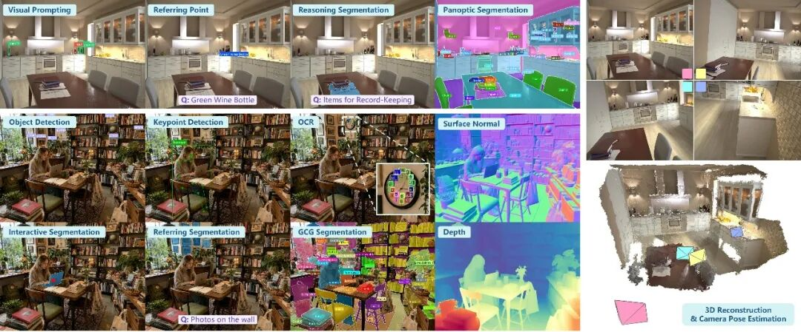
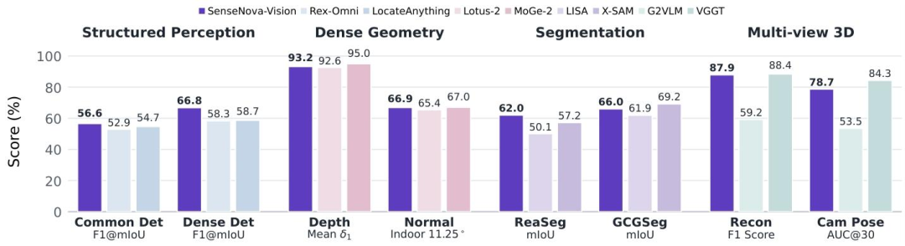
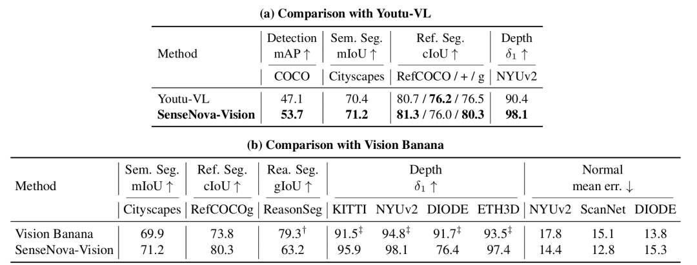

모델 개요
SenseTime은 오늘 이해 및 생성 기능이 통합된 Vision 대형 모델인 SenseNova-Vision을 발표하고 전체 소스 코드를 공개했습니다. 이는 SenseNova 대형 모델 생태계에서 시각 능력을 한 단계 업그레이드하는 중요한 변화입니다.
SenseTime에 따르면, 기존의 "통합 시각"은 주로 탐지, 분할, 깊이 예측 등 여러 전문 모델을 결합한 형태였으며 본질적으로 파편화되어 있었습니다. SenseNova-Vision의 핵심 혁신은 시각 기능을 범용 기초 모델의 고유 능력으로 만들어 대형 모델 체계에 완전히 통합한 것입니다. 이를 통해 객체 탐지, 이미지 분할, 깊이 예측, 3D 재구성 등 모든 클래식 시각 작업이 원천적으로 통합되었습니다.
주요 성능 평가
여러 평가에서 SenseNova-Vision은 단일 모델로서 네 가지 핵심 시각 분야에서 우수한 성적을 거두었으며, 각 분야의 전용 "전문 모델"과 대등하거나 이를 능가하는 성능을 보여주었습니다.
- 구조화된 시각 이해: 객체 탐지, 지칭 탐지(Referring), OCR, 핵심 포인트 위치 파악 등에서 유사한 유형의 범용 모델을 압도하며, 특히 밀집된 작은 목표 탐지 및 롱테일 카테고리 인식과 같은 복잡한 시나리오에서 뛰어난 성능을 보였습니다.
- 밀집 기하 예측: 깊이 추정 및 표면 법선(Surface Normal) 추정 정확도가 기하 전용 모델 수준에 도달했으며, 실내외 다양한 환경에서 높은 안정성을 유지했습니다.
- 분할 능력: 일반 분할, 추론 분할, 상호작용 분할 등을 포함하며, 강력한 멀티모달 이해력을 바탕으로 추론 분할(Reasoning Segmentation) 및 대화형 분할(GCG Segmentation)에서 뛰어난 성능을 입증했습니다.
- 다각도 3D 기하: 단일 모델만으로 고품질의 다각도 포인트 클라우드 재구성 및 카메라 포즈 추정을 수행하며, 범용 시각 경로 중 선도적인 위치를 차지했습니다.
비교 분석
다른 모델과의 비교 결과는 다음과 같습니다.
의미 중심 모델(Youtu-VL 등)과 비교했을 때, SenseNova-Vision은 탐지, 분할, 깊이 등 세부 사항 요구치가 높은 시각 작업에서 압도적인 우위를 점했습니다.
생성 중심 모델(Vision Banana 등)과 비교했을 때, 다음과 같은 세대적 우위를 보여주었습니다.
- 핵심 지표 초과: 권위 있는 평가의 핵심 대결에서 SenseNova-Vision은 대부분의 지표에서 Vision Banana를 능가했습니다.
- 작업 능력 증대 및 전체 오픈 소스: Vision Banana가 4가지 핵심 분야 중 2개 유형만 처리할 수 있는 반면, SenseNova-Vision은 구조적 이해, 밀집 기하, 파노라마 분할, 다각도 3D 등 모든 작업을 동시에 수행하며 더 강력한 멀티태스크 일반화 능력을 보여주었습니다. 또한 모델과 데이터 모두를 공개했습니다.
데이터 및 향후 계획
SenseTime은 5,000만 개의 샘플을 포함하는 시각 명령어 데이터셋인 SenseNova-Vision Corpus-50M을 함께 공개했습니다.
향후 SenseTime은 SenseNova-Vision의 핵심 기술을 SenseNova U 시리즈 대형 모델에 전면 통합할 계획입니다.
총평
SenseNova-Vision은 시각 기능을 범용 기초 모델의 고유 능력으로 통합하여 객체 탐지, 분할, 3D 재구성 등 다양한 시각 작업을 단일 모델로 수행할 수 있게 합니다. 기존 전문 모델이나 다른 생성/의미 중심 모델들과 비교해 우수한 성능과 확장성을 입증했으며, 관련 데이터셋을 포함한 모델과 데이터를 모두 공개했습니다.
模型发布与核心理念
商汤科技正式开源SenseNova-Vision，这是其日日新大模型体系的重要视觉能力升级。不同于以往将多个专家模型打包封装的“统一视觉”，SenseNova-Vision 的核心变革在于让视觉成为通用基础模型的原生能力，实现了目标检测、图像分割、深度预测及3D重建等任务的原生统一。
核心功能与技术优势
SenseNova-Vision 以“单模型”在四个核心领域展现出领先于专用“专家模型”的性能：
- 结构化视觉理解： 在目标检测、指代检测（Referring）、OCR、关键点定位等任务上全面领先，尤其在稠密小目标检测和长尾类别识别场景表现突出。
- 稠密几何预测： 深度估计与表面法向（Surface Normal）估计精度达到专业模型水准，具备极高的稳定性。
- 分割能力： 支持通用分割、推理分割及交互式分割，在推理分割（Reasoning Segmentation）与对话式分割（GCG Segmentation）中表现优异。
- 多视角 3D 几何： 单模型即可完成高质量的多视角点云重建与相机位姿估计。
竞品对比与开源资源
在横向对比中，SenseNova-Vision 在要求极高的细节任务上领先于语义导向模型（如 Youtu-VL），并展现出比生成导向模型（如 Vision Banana）更强的多任务泛化实力。此外，商汤同步开源了包含5000万条样本的视觉指令语料库SenseNova-Vision Corpus-50M，并将相关技术融入到日日新 U 系列大模型中。
总结
商汤科技发布的SenseNova-Vision是一个将多种复杂视觉任务整合为原生能力的统一视觉大模型。该模型在结构化理解、几何预测、分割及3D重建等多个维度均表现出色，并配套开源了包含5000万条样本的语料库。
モデル概要
SenseTimeは本日、理解と生成機能を統合したVision大規模モデル「SenseNova-Vision」を発表し、全ソースコードを公開しました。これはSenseNovaモデルエコシステムにおいて、視覚能力を次なる段階へと引き上げる重要な進化となります。
SenseTimeによると、従来の「統合された視覚」は主に検出、セグメンテーション、深度予測など複数の専門モデルを組み合わせたものであり、本質的に断片化されていました。SenseNova-Visionの核心的な革新は、視覚機能を汎用基礎モデル固有の能力として構築し、大規模モデル体系に完全に統合したことにあります。これにより、物体検出、画像セグメンテーション、深度予測、3D再構成など、あらゆる古典的な視覚タスクが根本的に統合されました。
主要な性能評価
複数の評価において、SenseNova-Visionは単一モデルとして4つの主要な視覚分野で優れた成績を収め、各分野の専用「専門モデル」と同等、あるいはそれを上回る性能を示しました。
- 構造化された視覚理解：物体検出、リファレンス（Referring）、OCR、キーポイント位置特定などにおいて、同種の汎用モデルを圧倒し、特に密集した小さなターゲットの検出やロングテールカテゴリの認識といった複雑なシナリオで優れた性能を発揮しました。
- 密度の高い幾何予測：深度推定およびサーフェスノーマル（Surface Normal）推測の精度が幾何専用モデルのレベルに達し、屋内・屋外の多様な環境で高い安定性を維持しました。
- セグメンテーション能力：一般的なセグメンテーションに加え、強力なマルチモーダル理解に基づいた推論セグメンテーション（Reasoning Segmentation）や対話型セグメンテーション（GCG Segmentation）において優れた性能を実証しました。
- 多角的な3D幾何学：単一モデルのみで高品質な多角ポイントクラウド再構成およびカメラポーズ推定を実行し、汎用視覚経路の中で先導的な位置を占めています。
比較分析
他モデルとの比較結果は以下の通りです。
意味中心のモデル（Youtu-VLなど）と比較した際、SenseNova-Visionは検出、セグメンテーション、深度など、詳細な要求レベルの高い視覚タスクにおいて圧倒的な優位性を確立しました。
生成中心のモデル（Vision Bananaなど）と比較した際、以下のような次世代の優位性を示しました。
- 主要指標の超過：権威ある評価における主要な対決において、SenseNova-Visionはほとんどの指標でVision Bananaを上回りました。
- タスク能力の拡大と完全オープンソース：Vision Bananaが4つの主要分野のうち2つのタイプしか処理できないのに対し、SenseNova-Visionは構造的理解、密度の高い幾何学、パノラマセグメンテーション、多角的な3Dなど、すべてのタスクを同時に実行でき、より強力なマルチタスク汎用能力を示しました。さらに、モデルとデータの両方を公開しています。
データおよび今後の計画
SenseTimeは、5,000万のサンプルを含む視覚命令データセット「SenseNova-Vision Corpus-50M」を同時に公開しました。
今後、SenseTimeはSenseNova-Visionの核心技術をSenseNova Uシリーズの大規模モデルに全面的に統合する計画です。
まとめ
SenseNova-Visionは、視覚機能を汎用基礎モデルの固有能力として統合することで、物体検出や3D再構成など多岐にわたる視覚タスクを単一のモデルで実行可能にします。既存の専門モデルや他社の生成・意味中心モデルと比較しても優れた性能と拡張性を証明しており、関連するデータセットを含む全ソースコードも公開されました。
Model Overview
SenseTime has announced SenseNova-Vision, a vision large model that integrates both understanding and generation capabilities, and has released its full source code. This marks a significant advancement in the visual capabilities of the SenseNova large model ecosystem.
According to SenseTime, previous "integrated vision" approaches were essentially fragmented, relying on the combination of multiple specialized models for tasks such as detection, segmentation, and depth prediction. The core innovation of SenseNova-Vision is the integration of these visual functions as inherent capabilities of a general foundation model. This allows it to natively perform all classic vision tasks, including object detection, image segmentation, depth prediction, and 3D reconstruction.
Key Performance Evaluation
In various evaluations, SenseNova-Vision performed exceptionally well across four core vision fields as a single model, matching or even surpassing the performance of "specialized models" in each respective area.
- Structured Vision Understanding: It outperformed similar general models in object detection, referring, OCR, and keypoint localization, demonstrating superior performance in complex scenarios such as dense small target detection and long-tail category recognition.
- Dense Geometry Prediction: Its accuracy in depth estimation and surface normal prediction reached the level of geometry-specific models, maintaining high stability across various indoor and outdoor environments.
- Segmentation Capabilities: Based on powerful multimodal understanding, it demonstrated outstanding performance in general segmentation, reasoning segmentation, and interactive segmentation (GCG Segmentation).
- Multi-angle 3D Geometry: As a single model, it performed high-quality multi-view point cloud reconstruction and camera pose estimation, taking a leading position among general vision paths.
Comparative Analysis
The results of comparisons with other models are as follows:
Compared to meaning-centric models (such as Youtu-VL), SenseNova-Vision holds a significant advantage in vision tasks requiring high levels of detail, such as detection, segmentation, and depth.
Compared to generation-centric models (such as Vision Banana), it demonstrates several generational advantages:
- Exceeding Key Metrics: In authoritative evaluations, SenseNova-Vision outperformed Vision Banana across the majority of key metrics.
- Expanded Capabilities and Full Open Source: While Vision Banana can only handle two out of the four core areas, SenseNova-Vision performs all tasks simultaneously—including structural understanding, dense geometry, panoramic segmentation, and multi-angle 3D—while providing both model weights and data as open source.
Data and Future Plans
SenseTime also released the "SenseNova-Vision Corpus-50M," a vision instruction dataset containing 50 million samples.
Moving forward, SenseTime plans to fully integrate the core technologies of SenseNova-Vision into the SenseNova U series large models.
Summary
SenseNova-Vision is a unified vision large model that integrates detection, segmentation, and 3D reconstruction as inherent capabilities rather than using fragmented specialized modules. It outperforms both meaning-centric and generation-centric models in high-detail tasks while offering full open-source access to its weights and a massive 50-million sample dataset.


